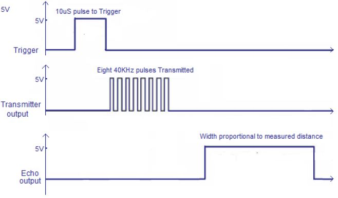
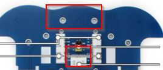
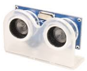
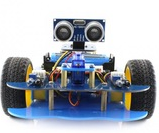

Posibilidad sensor Ultrasonidos
Se puede conseguir más precisión añadiendo un tercer sensor y mucho más preciso: El sensor de Ultrasonidos.

Mira en esta página para saber cómo se utiliza con el Arduino.
Básicamente se emite un pulso por el pin Trigger, él emite una señal de 40kHz y según el eco recibido saca por Output un pulso cuyo ancho es proporcional a la distancia:

Conexión en alphabot
En Alphabot se conectaría los cables en el conector blanco de abajo y el ultrasonidos con unos tornillos en los dos agujeros de la parte delantera:

El sensor de ultrasonidos tiene que estar adaptado a los cables compatibles con la Shield Grove de Arduino. Por ejemplo este:

CHAPUZA : No tiene su orden standard GND-Vcc-DATA1-DATA2 sino es GND-DATA1-DATA2-VCC o sea GND-Trg-Echo-5V luego habría que hacer alguna chapucilla de intercambiar cables, habría que elegir unos cables largos, cortarlos e intercambiarlos:

Para sujetar el sensor ultrasonidos al chasis habría que comprar un soporte:

Otra opción es quitar la cámara y poner el sensor de ultrasonidos:

EL KIT DE CATEDU NO PROPORCIONA EL SENSOR ULTRASONIDOS
Bueno, si aún así me decido ponerlo ¿cómo se programa?
Muy fácil, el conector blanco de abajo está conectado con los siguientes GPIO:
- Echo en el GPIO 5
- Trigger en el GPIO 17
Por lo tanto, viendo la teoría, una posible función en código Python para utilizarlo sería:
- Emitir un pulso alto por TRIG durante 15 microsegundos.
- Esperar el pulso alto de ECHO
- Cronometrar el pulso alto de ECHO
- La distancia será velocidad por tiempo o sea: la diferencia el tiempo del pulso ECHO multiplicado por la velocidad del sonido y dividido por 2 pues es el recorrido del sonido ida y vuelta.
TRIG = 17
ECHO = 5
GPIO.setup(TRIG,GPIO.OUT,initial=GPIO.LOW)
GPIO.setup(ECHO,GPIO.IN)
def Distance():
GPIO.output(TRIG,GPIO.HIGH)
time.sleep(0.000015)
GPIO.output(TRIG,GPIO.LOW)
while not GPIO.input(ECHO):
pass
t1 = time.time()
while GPIO.input(ECHO):
pass
t2 = time.time()
return (t2-t1)*34000/2

Alphabot por varios autores bajo licencia Creative Commons Reconocimiento-NoComercial-CompartirIgual 4.0 Internacional License.